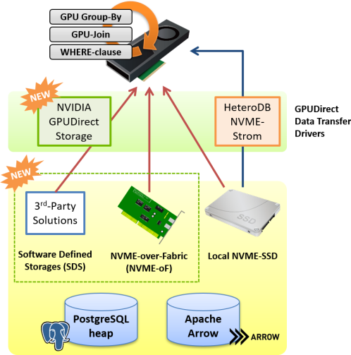
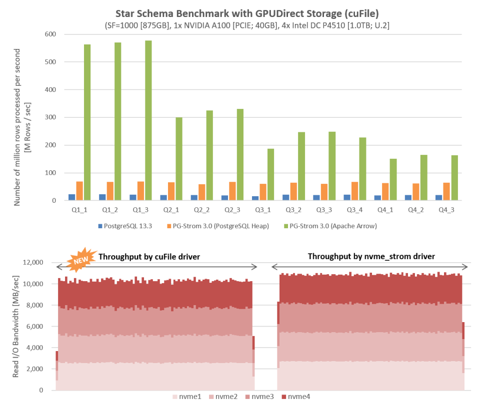

PG-Strom v3.0 Release
Overview
Major changes in PG-Strom v3.0 are as follows:
- NVIDIA GPUDirect Storage (cuFile) is now supported.
- Several PostGIS functions are executable on GPUs.
- GpuJoin using GiST index is now supported.
- GPU Cache mechanism is newly implemented.
- User-defined GPU data types/functions/operators are experimentally supported.
- Software license was switched from GPLv2 to PostgreSQL license.
Prerequisites
- PostgreSQL v11, v12, v13
- CUDA Toolkit 11.2 or later
- Linux distributions supported by CUDA Toolkit
- Intel x86 64bit architecture (x86_64)
- NVIDIA GPU CC 6.0 or later (Pascal or newer)
NVIDIA GPUDirect Storage
GPUDirect Storage, has been developed by NVIDIA, is now supported as a driver for GPU Direct SQL, in addition to the existing nvme_strom kernel module.

Both of drivers have almost equivalent functionalities and performance, but supports of GPUDirect Storage enables P2P direct read from NVME-oF (NVME over Fabrics) devices, SDS (Software Defined Storage) devices and shared filesystem built on these devices. Therefore, it offers larger and more flexible storage configuration.
We can use GPUDirect SQL to scan PostgreSQL's heap table and Apache Arrow files. It can expect significant performance improvement for the workloads where table scans are the major bottleneck, in either driver cases.
The performance measurement below is by SSBM (Star Schema Benchmark) using 1xGPU and 4xNVME-SSDs under the GPUDirect Storage driver. It shows number of rows processed per unit time is significantly improved regardless of the storage system; either PostgreSQL heap or Apache Arrow.

In comparison of the read throughput from NVME-SSD drives during the query execution, it shows the table scan by GPUDirect Storage pulls out almost optimal performance close to the hardware limitation, much faster than the scan by filesystem (PostgreSQL Heap Storage).
GPU-PostGIS and GiST-index
We have implemented GPU versions of several PostGIS functions. When these PostGIS functions are used in qualifier clauses (like, WHERE-clause), PG-Strom will automatically generate a GPU program to execute it on the GPU.
The main target of GPU version of PostGIS is the workload to check the real-time location data of mobile devices, like smartphones or vehicles, against the area definition data like boundary of municipality or school districts.

For example, when you want to deliver an advertisement to smartphonws in a particular area, or when you want to deliver traffic jam information to cara in a particular area, it is effective in the process of searching for the corresponding device using the position as a key.
In the following example, it creates 16 million random points data in a rectangular area that includes the Tokyo region, then count up number of the points contained in the cities in Tokyo for each. The vanilla PostGIS and GiST index took more than 160sec, on the other hand, GPU-version of PostGIS and GiST index responded in 0.830 sec.

GPU Cache
GPU Cache mechanism can store a copy of the target table in a pre-allocated area on the GPU device memory. It was designed for efficient execution of analytical/search queries on frequently updated data with relatively small data size (~10GB).
The GPU can process SQL workloads by referring to GPU Cache instead of loading data from tables when executing analytical/search queries.
This is typically a workload that keeps real-time data from millions of devices on the GPU and frequently updates timestamps and location information.

When the table with GPU cache is updated, the update history is stored in the on-memory redo log buffer, then applied to the GPU cache at a regular intervals or before executing the analysis / search workload. By this mechanism, it achieved both of frequent updates and consistency of GPU cache.
User-defined GPU datatype/functions
A new API is provided to add user-defined GPU data types/functions. This allows users to define and implement their own niche data types and SQL functions to process them, without modifying PG-Strom itself.
Notice
This API is still under the experimental state, so its specifications may be changed without notifications. Also note that we assume the users of this API well understand PG-Strom internal, so no documentations are provided right now.
PostgreSQL License Adoption
PG-Strom v3.0 or later adopt the PostgreSQL License.
The earlier version of PG-Strom has used GPLv2 due to the historical background, however, we recognized several concerns that license mismatch prevents joint solution development using PG-Strom core features and comprehensive tools.
Other updates
- Unique int1 (8-bit integer) data type and related operators are now supported.
--inner-joinand--outer-joinoptions are now available forpg2arrow. Apache Arrow files having more columns than the limit of PostgreSQL can now be generated.- In a multi-GPU environment, the GPU Memory Keeper background worker will now be launched for each GPU.
- PostgreSQL v13.x is now supported.
- CUDA 11.2 and Ampere generation GPUs are now supported.
- GPUDirect SQL now supports ScaleFlux's Computational Storage CSD2000 series (only cuFile driver).
- Miscellaneous bug fixes
Deprecated Features
- Support for PostgreSQL v10.x has been discontinued.
- The feature to link data with Python scripts (PyStrom) has been discontinued.